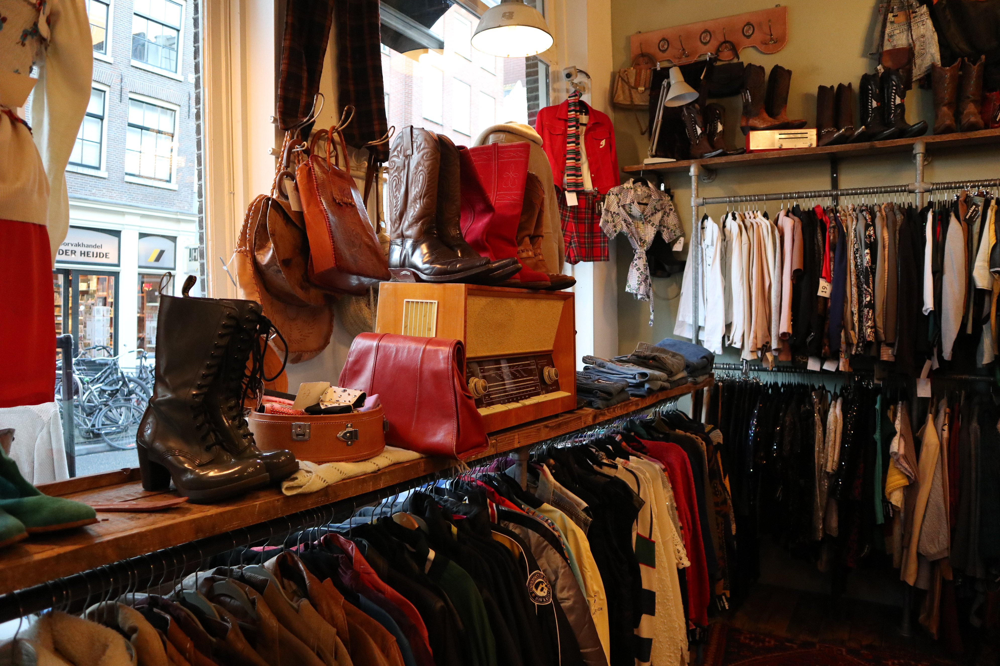

About

Vintage vinders is een website gemaakt voor het doel om de vintage winkels Marbles Vintage in Amsterdam bekender te maken, en om ervoor te zorgen dat mensen duurzamer omgaan met kleding! Wil je meer weten? Klik dan hieronder.
Kleding
Ben je benieuwd wat voor kleding de Marbles Vintage winkels in Amsterdam voor je hebben? Klik dan hieronder.
Locatie
De Marbles Vintage winkels hebben in Amsterdam maar liefts 3 locaties. Ben je benieuwd waar die zijn? Klik dan hieronder